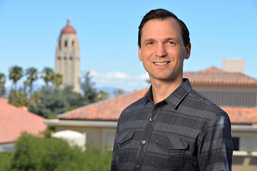

The 3rd IEEE Workshop on
| ||||||
| About | Keynotes | Dates and Submission | Student Travel Support | Organization | HMData 2018 | IEEE Bigdata 2019 |
About IEEE HMData 2019Overview
Human power is a key factor to maximize the impact of bigdata technologies. This workshop addresses human-in-the-loop approaches in bigdata lifecycle - in collecting, processing, analyzing, utilizing, archiving and disposing them. The purpose of this workshop is to give excellent opportunities for students, researchers and practitioners to identify important research problems and exchange their ideas on human-in-the-loop in the bigdata context. To make the workshop an attractive place for those people, we solicit practitioner papers as well as research papers, in order to facilitate discussion among researchers who know solutions and practitioners who know problems.
We also would like to make the place valuable for young researchers.
All papers accepted for the workshop will be included in the Workshop Proceedings published by the IEEE Computer Society Press, made available at the Conference.
Topics
This workshop covers a wide range of human-related topics in the bigdata context, such as crowdsourcing, collaborative recommendation, crowdsensing, workflow model for humans and machines, incentives, human-assisted bigdata analysis, bigdata-human interaction, supporting tools for humans in human-in-the-loop systems, security and privacy in human-machine collaboration , human factors and ELSI (ethical, legal and social issues) in human-in-the-loop systems, and human-machine collaboration in real-world problems.
Keynotes
Michael Bernstein (Stanford University)

Bio:
Michael Bernstein is an Assistant Professor of Computer Science at Stanford University,
where he is a member of the Human-Computer Interaction group.
His research focuses on the design of social computing and crowdsourcing systems.
Michael's research has received awards at premier computing venues,
and he has been recognized with an NSF CAREER award and an Alfred P. Sloan Fellowship.
His Ph.D. students have gone on both to industry (e.g., Adobe Research, Facebook Data Science, entrepreneurship)
and faculty careers (e.g., Carnegie Mellon, UC Berkeley).
Michael holds a bachelor's degree in Symbolic Systems from Stanford University,
as well as a master's degree and a Ph.D. in Computer Science from MIT.
Important Dates
SubmissionAll submissions must be submitted electorically through the submission page (to appear soon). Please prefix your submission category such as [Research Paper] to the Title of Paper field in the submission page. For example, if you would like to submit a project-in-progress paper "Crowd-centric Approach to Digital Archive Maintenance," you have to put "[project-in-progress paper] Crowd-centric Approach to Digital Archive Maintenance" into the Title of Paper field.All papers accepted for the workshop will be included in the Workshop Proceedings published by the IEEE Computer Society Press, made available at the Conference. Submission Categories
FormatPapers should be formatted to IEEE Computer Society Proceedings Manuscript Formatting Guidelines in the IEEE Bigdata 2019 CFP pageStudent Travel SupportThe IEEE BigData 2019 will offer student travel awards to student authors of not only main confernece papers but also workshop papers. Details will be given at IEEE Bigdata 2019 site later.OrganizationChairsSenjuti Basu Roy (NJIT)Alex Quinn (Purdue University) Atsuyuki Morishima (Univesity of Tsukuba) Program Committee (to be extended)
Mohammad Allahbakhsh (University of New South Wale)
Yukino Baba (University of Tsukuba) Wolf-Tilo Balke (Technische Universitaet Braunschweig) Adam Bradley (Amazon) Daniel Barowy (Williams College) Cinzia Cappiello (Politecnico di Milano) Marina Danilevsky (IBM Research - Almaden) Ujwal Gadiraju (L3S Research Center) Panos Ipeirotis (New York University) Vana Kalogeraki (Athens University of Economics and Business) Itaru Kitahara (University of Tsukuba) Dongwon Lee (Penn State) Satoshi Oyama (Hokkaido University/RIKEN AIP) Nobuyuki Shimizu (Yahoo!Japan Research) Elena Simperl (University of Southampton) Yu Suzuki (Gifu University) Keishi Tajima (Kyoto University) Saravanan Thirumuruganathan (QCRI) Ming Yin (Purdue University) Demetris Zeinalipour (University of Cyprus) Jing Zhang (Nanjing U. of Science ＆ Technology) Yudian Zheng (Twitter) Contacthmdata.chairs@gmail.com | ||||||